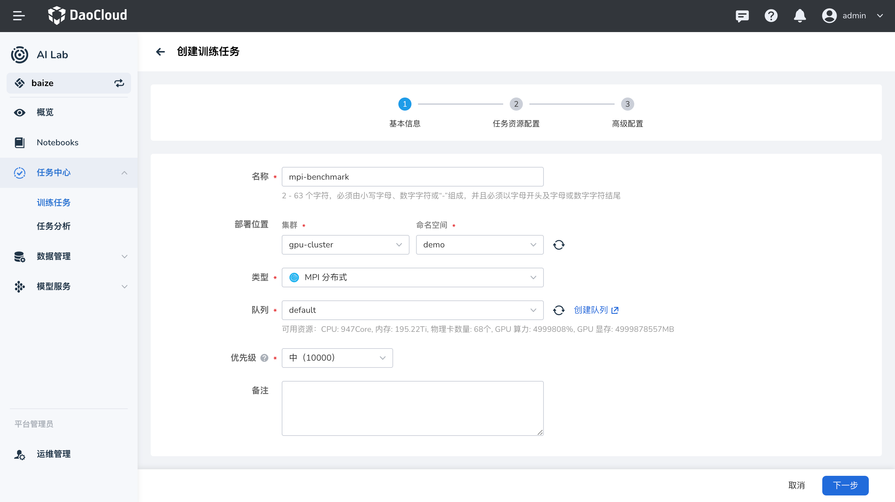

MPI 任务¶
MPI（Message Passing Interface）是一种用于并行计算的通信协议，它允许多个计算节点之间进行消息传递和协作。 MPI 任务是使用 MPI 协议进行并行计算的任务，适用于需要大规模并行处理的应用场景，例如分布式训练、科学计算等。
在 AI Lab 中，我们提供了 MPI 任务的支持，您可以通过界面化操作，快速创建 MPI 任务，进行高性能的并行计算。 本教程将指导您如何在 AI Lab 中创建和运行一个 MPI 任务。
任务配置介绍¶
- 任务类型 ：
MPI，用于运行并行计算任务。 - 运行环境 ：选用预装了 MPI 环境的镜像，或者在任务中指定安装必要的依赖。
- MPIJob 配置 ：理解并配置 MPIJob 的各项参数，如副本数、资源请求等。
任务运行环境¶
在这里我们使用 baize-notebook 基础镜像和 关联环境 的方式来作为任务的基础运行环境。
确保运行环境中包含 MPI 及相关库，如 OpenMPI、mpi4py 等。
注意 ：了解如何创建环境，请参考环境列表。
创建 MPI 任务¶
MPI 任务创建步骤¶

- 登录平台 ：登录 AI Lab 平台，点击左侧导航栏中的 任务中心，进入 训练任务 页面。
- 创建任务 ：点击右上角的 创建 按钮，进入任务创建页面。
- 选择任务类型 ：在弹出的窗口中，选择任务类型为
MPI，然后点击 下一步。 - 填写任务信息 ：填写任务名称和描述，例如 “benchmarks-mpi”，然后点击 下一步。
- 配置任务参数 ：根据您的需求，配置任务的运行参数、镜像、资源等信息。
运行参数¶
- 启动命令 ：使用
mpirun，这是运行 MPI 程序的命令。 - 命令参数 ：输入您要运行的 MPI 程序的参数。
示例：运行 TensorFlow Benchmarks
在本示例中，我们将运行一个 TensorFlow 的基准测试程序，使用 Horovod 进行分布式训练。 首先，确保您使用的镜像中包含所需的依赖项，例如 TensorFlow、Horovod、Open MPI 等。
镜像选择 ：使用包含 TensorFlow 和 MPI 的镜像，例如 mai.daocloud.io/docker.io/mpioperator/tensorflow-benchmarks:latest。
命令参数 ：
mpirun --allow-run-as-root -np 2 -bind-to none -map-by slot \
-x NCCL_DEBUG=INFO -x LD_LIBRARY_PATH -x PATH \
-mca pml ob1 -mca btl ^openib \
python scripts/tf_cnn_benchmarks/tf_cnn_benchmarks.py \
--model=resnet101 --batch_size=64 --variable_update=horovod
说明 ：
mpirun：MPI 的启动命令。--allow-run-as-root：允许以 root 用户运行（在容器中通常是 root 用户）。-np 2：指定运行的进程数为 2。-bind-to none，-map-by slot：MPI 进程绑定和映射的配置。-x NCCL_DEBUG=INFO：设置 NCCL（NVIDIA Collective Communication Library）的调试信息级别。-x LD_LIBRARY_PATH，-x PATH：在 MPI 环境中传递必要的环境变量。-mca pml ob1 -mca btl ^openib：MPI 的配置参数，指定传输层和消息层协议。python scripts/tf_cnn_benchmarks/tf_cnn_benchmarks.py：运行 TensorFlow 基准测试脚本。--model=resnet101，--batch_size=64，--variable_update=horovod：TensorFlow 脚本的参数，指定模型、批量大小和使用 Horovod 进行参数更新。
资源配置¶
在任务配置中，需要为每个节点（Launcher 和 Worker）分配适当的资源，例如 CPU、内存和 GPU。
资源示例 ：
-
Launcher（启动器） ：
- 副本数 ：1
- 资源请求 ：
- CPU：2 核
- 内存：4 GiB
-
Worker（工作节点） ：
- 副本数 ：2
- 资源请求 ：
- CPU：2 核
- 内存：4 GiB
- GPU：根据需求分配
完整的 MPIJob 配置示例¶
以下是完整的 MPIJob 配置示例，供您参考。
apiVersion: kubeflow.org/v1
kind: MPIJob
metadata:
name: tensorflow-benchmarks
spec:
slotsPerWorker: 1
runPolicy:
cleanPodPolicy: Running
mpiReplicaSpecs:
Launcher:
replicas: 1
template:
spec:
containers:
- name: tensorflow-benchmarks
image: mai.daocloud.io/docker.io/mpioperator/tensorflow-benchmarks:latest
command:
- mpirun
- --allow-run-as-root
- -np
- "2"
- -bind-to
- none
- -map-by
- slot
- -x
- NCCL_DEBUG=INFO
- -x
- LD_LIBRARY_PATH
- -x
- PATH
- -mca
- pml
- ob1
- -mca
- btl
- ^openib
- python
- scripts/tf_cnn_benchmarks/tf_cnn_benchmarks.py
- --model=resnet101
- --batch_size=64
- --variable_update=horovod
resources:
limits:
cpu: "2"
memory: 4Gi
requests:
cpu: "2"
memory: 4Gi
Worker:
replicas: 2
template:
spec:
containers:
- name: tensorflow-benchmarks
image: mai.daocloud.io/docker.io/mpioperator/tensorflow-benchmarks:latest
resources:
limits:
cpu: "2"
memory: 4Gi
nvidia.com/gpumem: 1k
nvidia.com/vgpu: "1"
requests:
cpu: "2"
memory: 4Gi
配置解析 ：
apiVersion和kind：表示资源的 API 版本和类型，MPIJob是 Kubeflow 定义的自定义资源，用于创建 MPI 类型的任务。metadata：元数据，包含任务的名称等信息。spec：任务的详细配置。slotsPerWorker：每个 Worker 节点的槽位数量，通常设置为 1。runPolicy：运行策略，例如任务完成后是否清理 Pod。mpiReplicaSpecs：MPI 任务的副本配置。Launcher：启动器，负责启动 MPI 任务。replicas：副本数，通常为 1。template：Pod 模板，定义容器运行的镜像、命令、资源等。
Worker：工作节点，实际执行任务的计算节点。replicas：副本数，根据并行需求设置，这里设置为 2。template：Pod 模板，同样定义容器的运行环境和资源。
设置任务副本数¶
在创建 MPI 任务时，需要根据 mpiReplicaSpecs 中配置的副本数，正确设置 任务副本数。
- 总副本数 =
Launcher副本数 +Worker副本数 -
本示例中：
Launcher副本数：1Worker副本数：2- 总副本数 ：1 + 2 = 3
因此，在任务配置中，您需要将 任务副本数 设置为 3。
提交任务¶
配置完成后，点击 提交 按钮，开始运行 MPI 任务。
查看运行结果¶
任务提交成功后，您可以进入 任务详情 页面，查看资源的使用情况和任务的运行状态。 从右上角进入 工作负载详情，可以查看运行过程中每个节点的日志输出。
示例输出：
这表示 MPI 任务成功运行，TensorFlow 基准测试程序完成了分布式训练。
小结¶
通过本教程，您学习了如何在 AI Lab 平台上创建和运行一个 MPI 任务。我们详细介绍了 MPIJob 的配置方式， 以及如何在任务中指定运行的命令和资源需求。希望本教程对您有所帮助，如有任何问题，请参考平台提供的其他文档或联系技术支持。
附录 ：
- 如果您的运行环境未预装所需的库（如
mpi4py、Horovod 等），请在任务中添加安装命令，或者使用预装了相关依赖的镜像。 - 在实际应用中，您可以根据需求修改 MPIJob 的配置，例如更改镜像、命令参数、资源请求等。